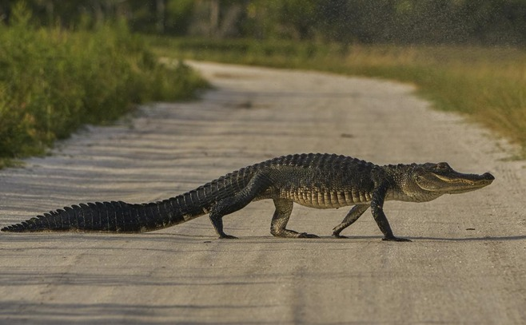

Según la especie de la que se trate, el caimán puede variar de tamaño. Éste va desde 1,2 metros hasta los 2,5 metros. El
30% de su cuerpo corresponde a una poderosa cola que le permite impulsarse en el agua, lo que los convierte en grandes
nadadores.
Estos animales presentan en el lomo una especie de coraza conformada por placas o escamas denominadas osteodermos.
Los osteodermos del caimán, además de jugar un rol de protección, actúan como acumuladores del calor que proveen los rayos solares.
Nombre científico: Caiman.
Habitad: Regiones subtropicales y tropicales.
Especie: Reptil.
Origen: América, desde Florida hasta el sur de Sudamérica.

Conocida en algunos lugares del occidente de El Salvador como sheras o jiotes, es un curioso reptil inofensivo de zonas áridas.
Vive debajo de rocas y árboles. Tiene la afición de comerse las hojas de los cultivos de frijol cuando están disponibles,
motivo por el cual muchas veces es perseguida.
. Aunado a esto, sus poblaciones en Honduras, Guatemala y en nuestro país parece ser muy bajas y dispersas. Esto hace que sea
muy raro de observarse en El Salvador, lo que provoca que se conozca muy poco sobre su biología.
Nombre científico: Ctenosaura flavidorsalis.
Habitad: Terreno rocoso en bosque seco tropical y subtropical.
Especie: Reptil.
Origen: Nativo de Guatemala, El Salvador, y Honduras.

Se trata de la familia dominante de reptiles, caracterizados por su gran fuerza y agresividad. Pueden llegar a pesar hasta
800 kg y 6 metros de largo. Poseen una piel muy gruesa y rugosa, no obstante, los cocodrilos tienen una gran sensibilidad.
Por esta razón han sufrido y sufren la caza por parte del ser humano, quien utiliza sus pieles para el negocio de la marroquinería.
Este hecho ha colocado a estos reptiles en peligro de extinción, y por eso actualmente existen leyes que penan esta práctica y se están
creando nuevas leyes para proteger a este animal.
Nombre científico: Crocodylidae.
Habitad: Regiones tropicales.
Especie: Reptiles.
Origen: África, Asia, América y Australia.

El caimán de Cuvier, también llamado caimán almizclero, caimán enano, y caimán de frente lisa, este caimán es capturado por el
mercado negro como mascota, por lo que a menudo vive en cautiverio. Los machos de esta especie alcanzan una longitud máxima de
aproximadamente 1,6 metros, mientras que las hembras no suelen superar los 1,2 metros.
Su cabeza tiene una forma peculiar, con un hocico corto y un cráneo redondo. Los adultos son de color marrón oscuro, pero los
ejemplares más jóvenes son marrones con bandas negras. El iris del ojo es castaño a todas las edades y la pupila en una rendija vertical.
Nombre científico: Paleosuchus palpebrosus.
Habitad: Selvas inundadas y en el entorno de los grandes lagos, ríos y arroyos.
Especie: Reptiles.
Origen: El norte de Bolivia, el norte y el centro de Brasil, el este de Colombia, Ecuador,
Guayana Francesa, Guayana, Surinam, Perú, Paraguay y Venezuela.